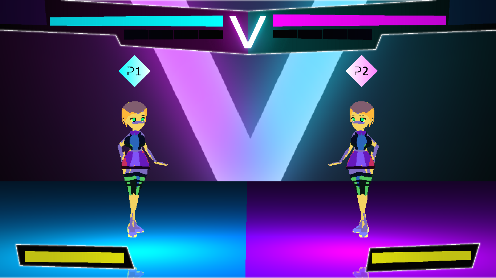
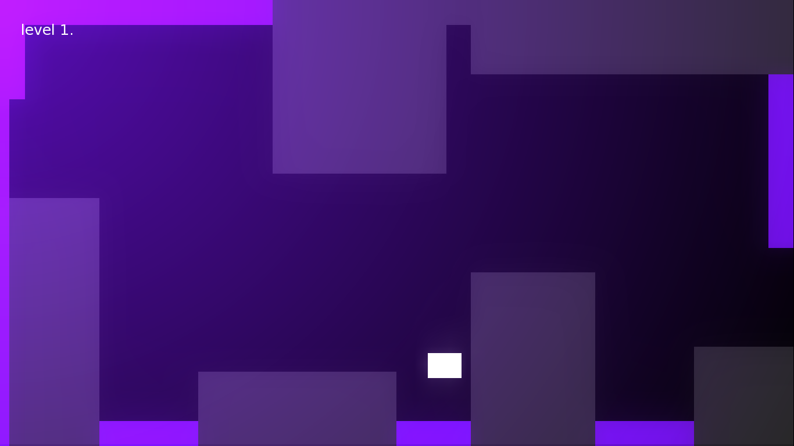
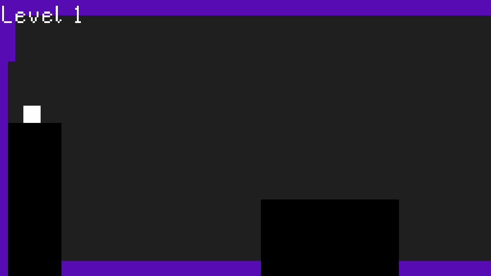

Owen Campbell
Software Developer
Who am I?
My name is Owen Campbell. Right now I'm a 16 year old hobbiest video game developer with plenty of personal experience in Python, though I'm open to learning other programming languages. Currently I code solo projects under the username "Owen CMYK", but I look forward to making use of my skills in a professional setting. If you're interested in hiring me for such work, my contacts are at the bottom of the page. If you're not sure, please see the following examples of things I've made during my time working solo.
DigitalVENOM: Radium Blood
2022

A fighting game, and sequel to the original DigitalVENOM.
What is Radium Blood?
DigitalVENOM: Radium Blood, often just referred to as "Radium Blood" for short, is an arcade style tactical 2D fighting game. It's a sequel to the original DigitalVENOM built from the ground up in a new engine with a custom designed framerate regulation system to make sure the game runs internally at 60 frames per second. The game is written in Python with shaders in GLSL and is not yet available for purchase as development is ongoing. I won't bore you with the technical challenges, but tactical fighting games (usually called "airdashers") are considered to be among the most complicated and difficult games to develop, as such their indie development scene is extremely limited.
DigitalVENOM
2020

A tactical 2D fighting game.
What is DigitalVENOM
DigitalVENOM, officially called DigitalVENOM: The Lethal Injection, is a tactical retro 2D fighting game. It's in a polished and playable state, but has not been released in any official capacity. The game is written in Python using the Pygame library, and involves a custom optimized 2D rendering pipeline which I developed to allow scaling of sprites with dynamic lighting, palletes, and outlines which can be customized by the player and update in real-time, as well as a custom particle system for rendering sparks and other effects. The game is complete with several modes and a tutorial for each in-game character which guides you through their specific attacks and combos. The game also has a robust replay system which saves the inputs of every game and deterministically replays them in order to allow the player to rewatch every fight.
Don't Touch the Purple: Violet Edition
2022

A cross-platform remake of Don't Touch the Purple.
What is Violet Edition?
Don't Touch the Purple: Violet Edition is a remake of Don't Touch the Purple that is cross platform. I rewrote the game to be compatible with mobile and web using my own custom mathematics libraries in Python. On top of that I gave the game lighting and a higher resolution and adapted the control scheme to be one button in order to make it more compatible with mobile devices. As with many of my projects, I have not yet released this to the public in any official capacity, though I intend to release it to the Google Play store soon.
Don't Touch the Purple
2022

Endless platformer made over a weekend.
What is Don't Touch the Purple?
Don't Touch the Purple (DTTP) is a PC exclusive endless side-scrolling platformer game written in Python. It was developed over the course of a weekend for a game development competition called Ludum Dare 50. For this game I developed a level loader, as well as a collision and physics system to make sure the character felt smooth and responsive at all times. I think this shows well my ability to rapidly prototype and quickly implement code in a short amount of time.
Contacts
owencmyk@gmail.com
@Owen CMYK#1239
www.github.com/owengaming001